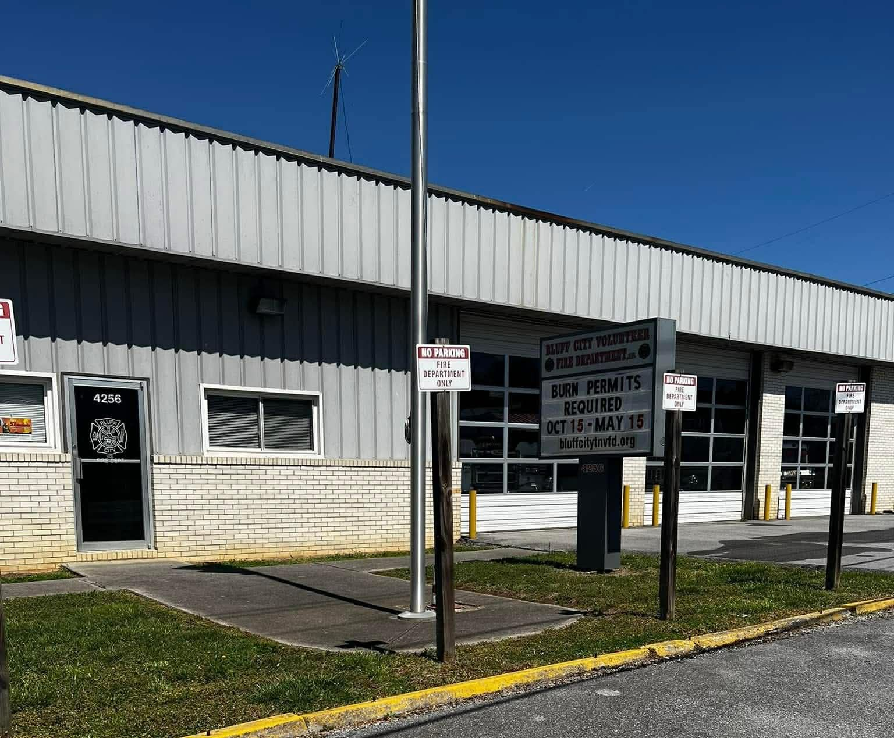

Engine 192
Rescue Pumper
For nearly a century, Bluff City Volunteer Fire Department has proudly served our community through dedicated volunteer service, emergency response, and fire prevention.

For nearly 100 years, Bluff City Volunteer Fire Department has stood ready to protect the lives, property, and well-being of our community.
Powered by dedicated volunteers, our department provides emergency response, fire protection, and public safety education. From the first alarm to the final call, our commitment remains the same: serving our neighbors with courage, professionalism, and pride.
About our departmentSix vehicles stand ready to respond when you call 911.
Rescue Pumper

Rescue Pumper

Rescue Pumper / Backup Truck
Tanker, 2,500 Gallons
Brush Truck

Utility / Support Vehicle
Our department depends on volunteers who dedicate their time to protecting the community. Whether you want to serve on the fire ground or support our mission behind the scenes, there is a place for you here.
Come to any Tuesday night meeting at 7 PM to pick up an application and meet our members.
We meet every Tuesday night at 7 PM at the station, and anyone is welcome. Stop by to donate, pick up an application, meet our members, or see the station and trucks.
A day to thank the volunteers, donors, and neighbors who support the department. Date to be announced.
Bluff City Volunteer Fire Department is a 501(c)(3) nonprofit. Contributions support equipment, training, and emergency response operations as we approach our 100th year.
For Sullivan County Dispatch non-emergency, call 423-279-7330.